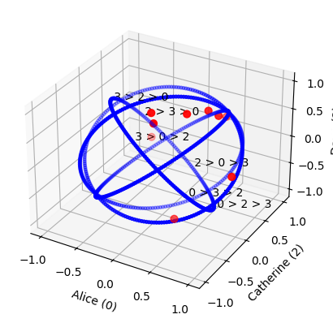
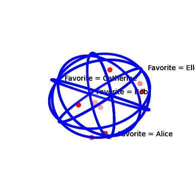

Profile#
[1]:
import svvamp
Define a random generator of profiles using the Spheroid model (which extends Impartial Culture to utilities), with 9 voters and 5 candidates:
[2]:
random_profile = svvamp.GeneratorProfileSpheroid(n_v=9, n_c=5)
random_profile
[2]:
<svvamp.preferences.generator_profile_spheroid.GeneratorProfileSpheroid at 0x27af8244170>
Use the generator to create a random profile:
[3]:
profile = random_profile()
If you wish, you can give a label to each candidate:
[4]:
profile.labels_candidates = ["Alice", "Bob", "Catherine", "Dave", "Ellen"]
Basic information about the profile:
[5]:
profile.n_v
[5]:
9
[6]:
profile.n_c
[6]:
5
[7]:
profile.labels_candidates
[7]:
['Alice', 'Bob', 'Catherine', 'Dave', 'Ellen']
Voters’ rankings of preference:
[8]:
profile.preferences_rk
[8]:
array([[0, 4, 2, 1, 3],
[2, 0, 3, 4, 1],
[1, 3, 0, 4, 2],
[3, 4, 0, 2, 1],
[1, 3, 0, 4, 2],
[4, 2, 3, 0, 1],
[3, 0, 1, 2, 4],
[3, 4, 1, 0, 2],
[0, 3, 2, 4, 1]])
Voters’ utilities for the candidates:
[9]:
profile.preferences_ut
[9]:
array([[ 0.27850815, -0.28669485, -0.22244491, -0.84581486, 0.2745082 ],
[ 0.20483466, -0.76955375, 0.48285449, 0.12511632, -0.34209243],
[ 0.10182242, 0.69341051, -0.31735312, 0.62107686, -0.14954792],
[ 0.39364056, -0.07883268, 0.13936726, 0.64137693, 0.63878394],
[ 0.18832192, 0.87431586, -0.05090841, 0.44387678, 0.0220992 ],
[-0.27510627, -0.72888585, 0.34813102, -0.18660524, 0.48685237],
[ 0.59273353, 0.27459674, 0.23258561, 0.71828012, 0.05693147],
[ 0.03186397, 0.34120599, -0.2585684 , 0.75864952, 0.4900576 ],
[ 0.84416513, -0.4321969 , -0.09895003, 0.0351225 , -0.29927643]])
Plot the restriction of the population to 3 candidates, for example [0, 2, 3] (Alice, Catherine and Dave), in the utility space:
[10]:
profile.plot3(indexes=[0, 2, 3])

Plot the restriction of the population to 4 candidates, for example [0, 1, 2, 4] (Alice, Bob, Catherine and Ellen), in the utility space:
[11]:
profile.plot4(indexes=[0, 1, 2, 4])

Plurality score, Borda score and total utility of each candidate:
[12]:
profile.plurality_scores_ut
[12]:
array([2, 2, 1, 3, 1])
[13]:
profile.borda_score_c_ut
[13]:
array([22., 13., 13., 25., 17.])
[14]:
profile.total_utility_c
[14]:
array([ 2.36078407, -0.11263493, 0.25471352, 2.31107892, 1.178316 ])
Matrix of duels (weighted majority graph) and matrix of victories (unweighted majority graph):
[15]:
profile.matrix_duels_ut
[15]:
array([[0, 6, 7, 3, 6],
[3, 0, 4, 3, 3],
[2, 5, 0, 3, 3],
[6, 6, 6, 0, 7],
[3, 6, 6, 2, 0]])
[16]:
profile.matrix_victories_ut_abs
[16]:
array([[0., 1., 1., 0., 1.],
[0., 0., 0., 0., 0.],
[0., 1., 0., 0., 0.],
[1., 1., 1., 0., 1.],
[0., 1., 1., 0., 0.]])
Condorcet winner:
[17]:
profile.condorcet_winner_ut_abs
[17]:
3
By convention, if there is no Condorcet winner, then SVVAMP returns nan (not a number).